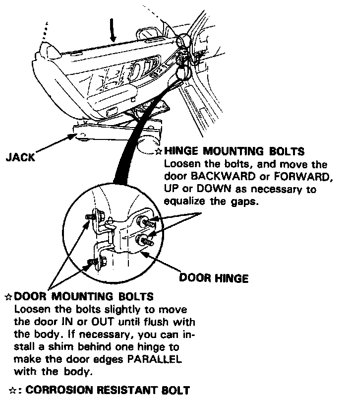
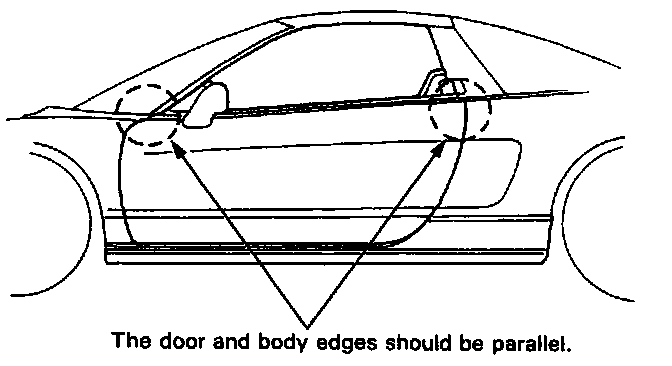

Front Door: Adjustments


POSITION ADJUSTMENT
After installing the door, check for a flush fit with the body, then check for equal gap between the front and rear, and top and bottom door edges and the body. The door and body edges should also be parallel. Adjust at the hinges as shown.
CAUTION: Place a shop towel on the jack to prevent damage to the door when the hinge bolts are loosened for adjustment.
NOTE: Check for water and air leaks.